All 3 NeetCode 150 tries problems, one picture each
Open a problem to see its picture: the question, the main idea (the obvious way vs the smart way), a walkthrough, the code, and why it works.
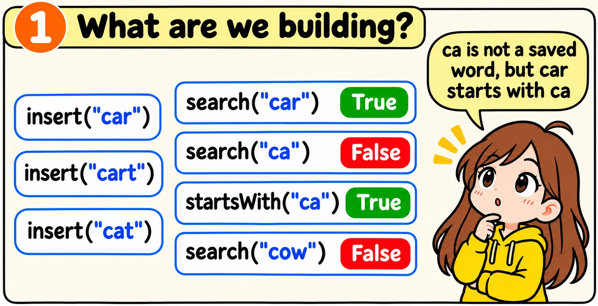
We build a class named Trie. The method insert saves a word. The method search checks whether a whole word was saved. The method startsWith checks whether any saved word begins with the given letters.
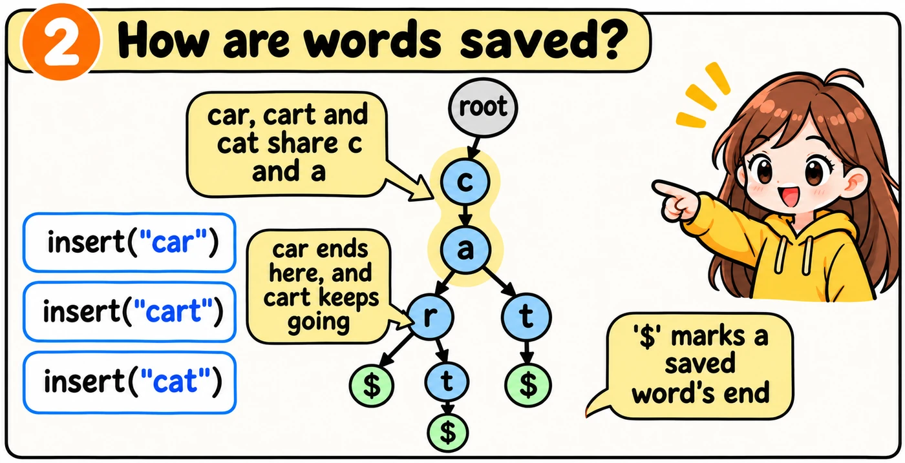
Each node is a dictionary. Its keys are the letters of the next nodes. The '$' key shows the end of a saved word.
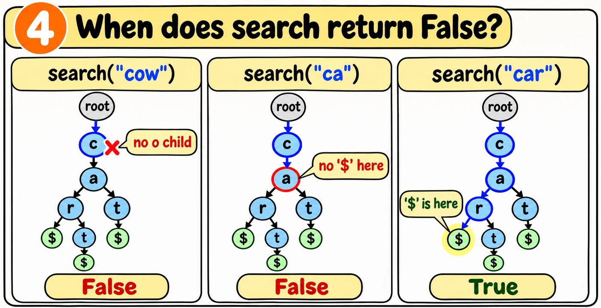
The methods search and startsWith move down the trie like insert. They return False when a letter is missing.
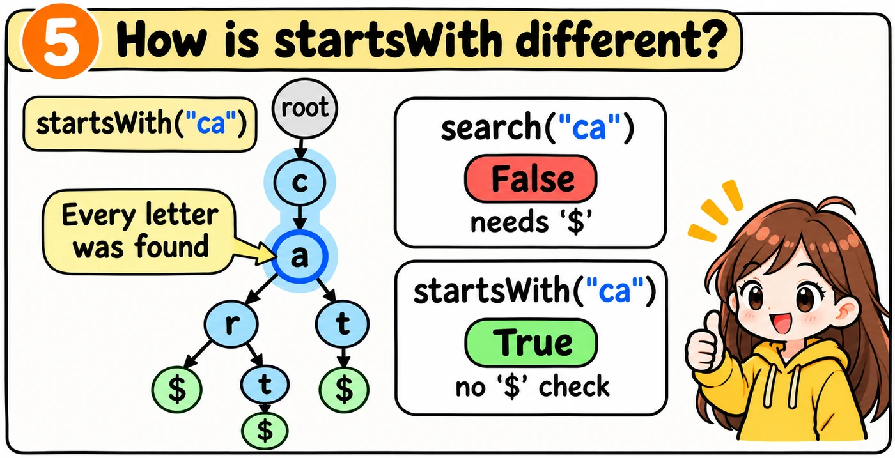
Tap Build it to see how I would write and explain this in an interview.
The one idea to remember
Write the whole class from memory. The comments explain each job, and a failed test gives a hint, not the answer.
The class and __init__ are already written. Fill in the three methods, starting each one at the left edge.
class Trie: def __init__(self): self.root = {} def insert(self, word):
def search(self, word):
def startsWith(self, prefix):
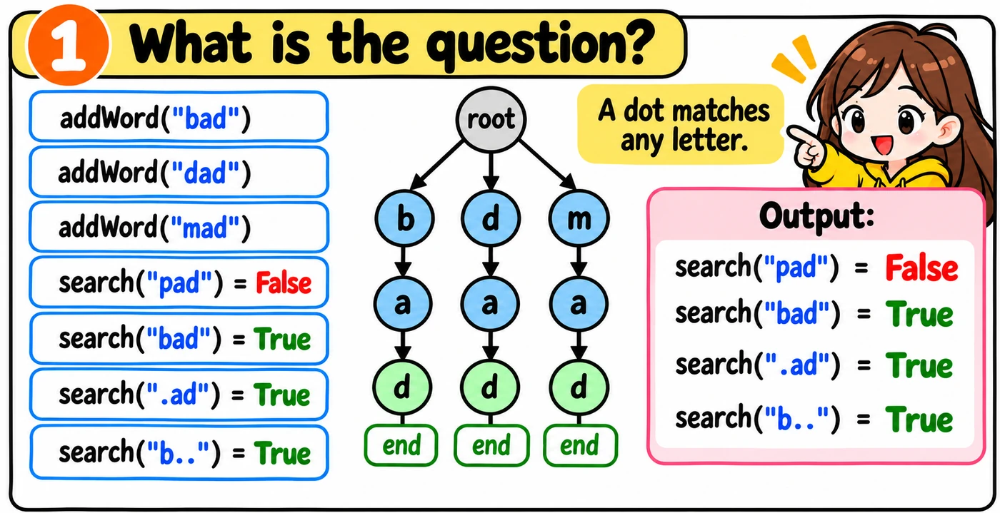
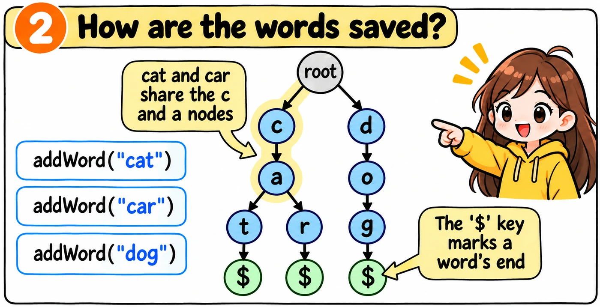
In Python, each node is a dictionary. It stores the letters that can come next.
class WordDictionary: def __init__(self): self.root = {}
Now let's write addWord. Press Next to watch it save cat, car and dog.
def addWord(self, word): node = self.root for letter in word: if letter not in node: node[letter] = {} node = node[letter] node['$'] = True
After addWord saves cat, car and dog, the trie looks like this. Each letter points to the next node. '$' shows where a word ends.
self.root = { 'c': { 'a': { 't': {'$': True}, 'r': {'$': True} } }, 'd': { 'o': { 'g': {'$': True} } }}
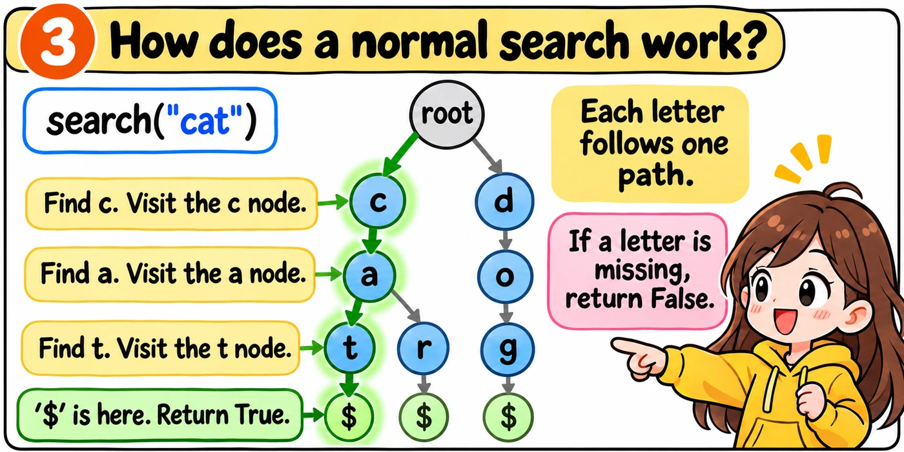
def search(self, word): node = self.root for letter in word: if letter not in node: return False node = node[letter] return '$' in node
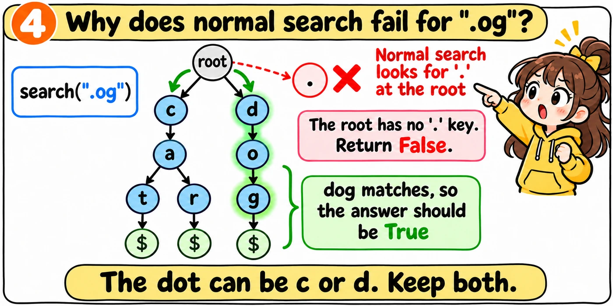
We need a way to remember every position we might currently be at. Let's use a list called current. Each item in current is a trie node, not a letter string.
Your coding challenge is to write search() from scratch.
First, write the five jobs below as comments. Then write the code under each comment. The From blank editor already includes the comments.
def search(self, word): # 1. Start at the root. # 2. Read one letter at a time. # 3. Find every possible next position. # 4. Move to those positions. # 5. Check whether a complete word matches.
Write the whole class, then run the tests. A failing test gives you a hint, not the answer.
Type the three missing parts of search, starting each one at the left edge. Then run the tests.
class WordDictionary: def __init__(self): self.root = {} def addWord(self, word): node = self.root for letter in word: if letter not in node: node[letter] = {} node = node[letter] node['$'] = True def search(self, word): current = [self.root] for letter in word: next_nodes = [] for node in current:
Test your understanding.
current instead of a single node?next_nodes list for every letter?'$' when processing a dot?'$' after processing the entire search word?next_nodes for that path, so the path disappears.'$' is True, not a node, so we can't move into it. It only marks the end of a word.ca reaches the a node, but no word ends there.Here is how I'll explain the solution. Tap Build it to write the code one step at a time and see what I'll say.
The one idea to remember
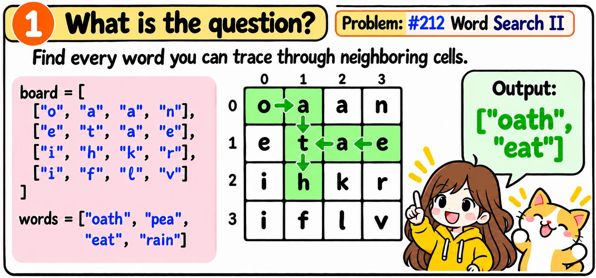
First, we will find one word. We will look for eat on the board.
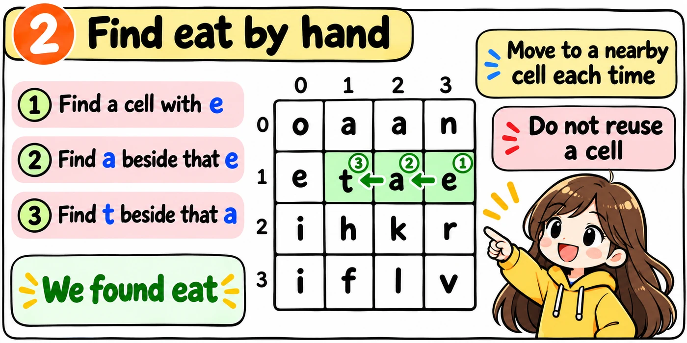
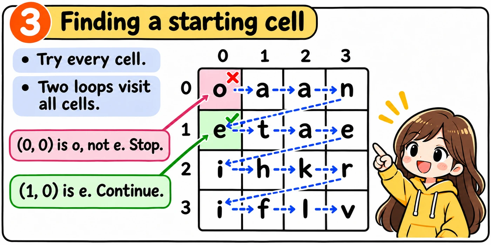
We add eat to a trie, like in addWord. Then we call dfs from every cell, starting at root.
found = []for r in range(len( for c in range(board)): len( self.dfs(board[0])): board, r, c, root, found)
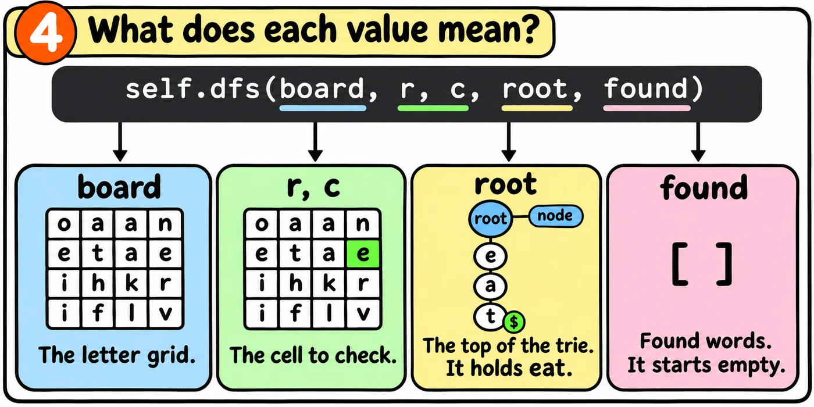
We do not look for the first letter separately. The call stops if the letter is not a child of the root.
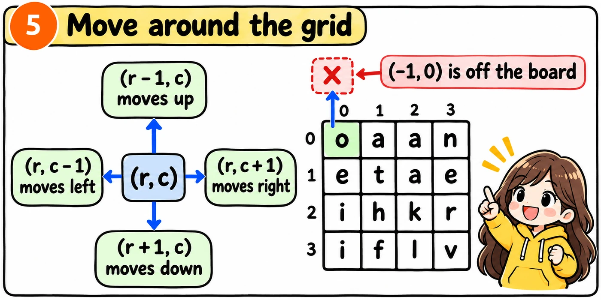
From one cell, we can move up, down, left or right. We cannot move past the edge, so we check that (r, c) is on the board.
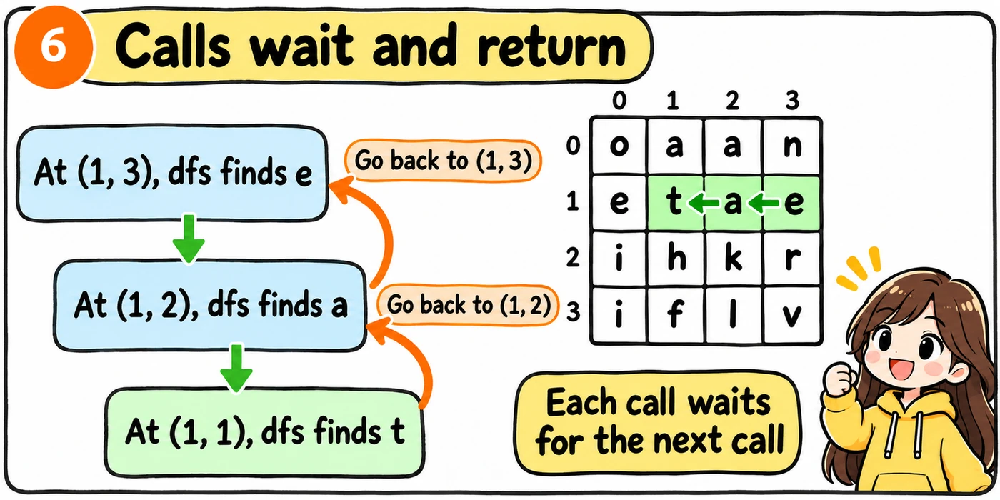
The dfs function checks one cell. It calls itself to check each nearby cell. Each call finishes before the earlier call tries its next neighbor.
We will build dfs using the trie for eat. Each stage adds one part.
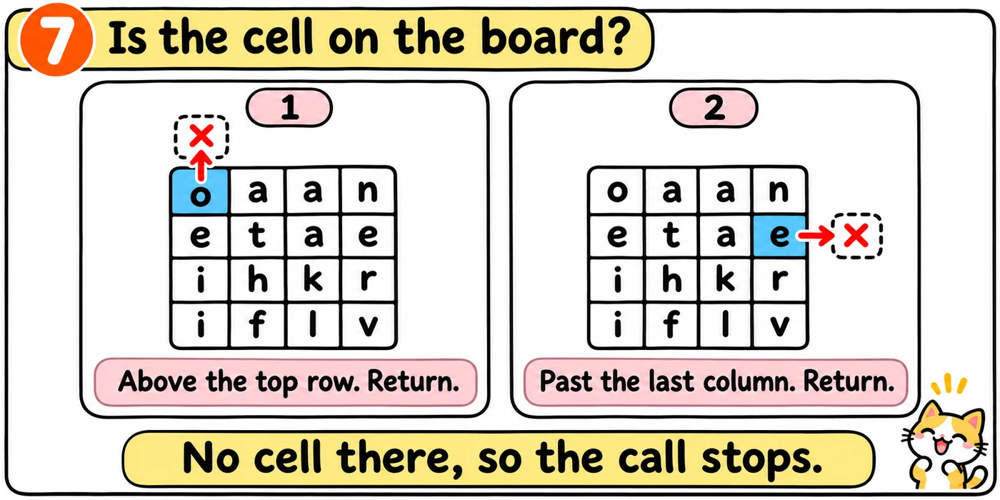
Return if the cell is off the board.
def dfs(self, board, r, c, node, found): if r < 0 or r >= len(board) or c < 0 or c >= len( returnboard[0]):
The cell is past the bottom of the board. What happens?
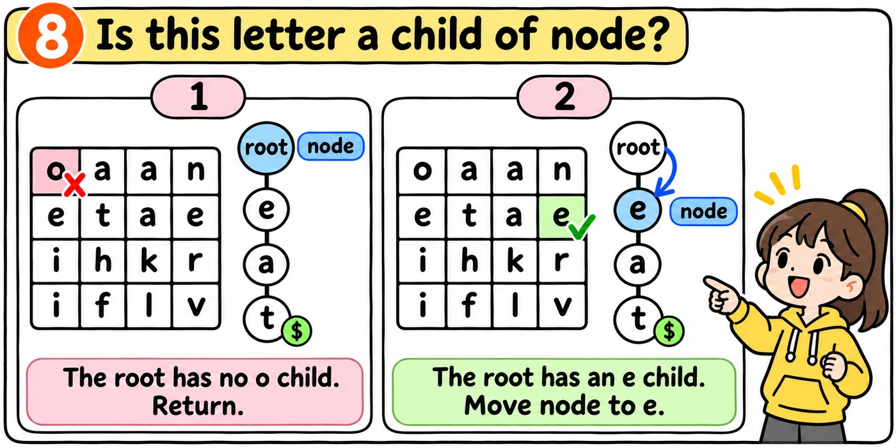
Return if the letter is not a child of node. Otherwise, move node to that child.
def dfs(self, board, r, c, node, found): if r < 0 or r >= len(board) or c < 0 or c >= len( return letter = board[r][c] if letter not in node: return node = node[letter]board[0]):
The trie holds only eat. The root is node, and the cell has o. What happens?
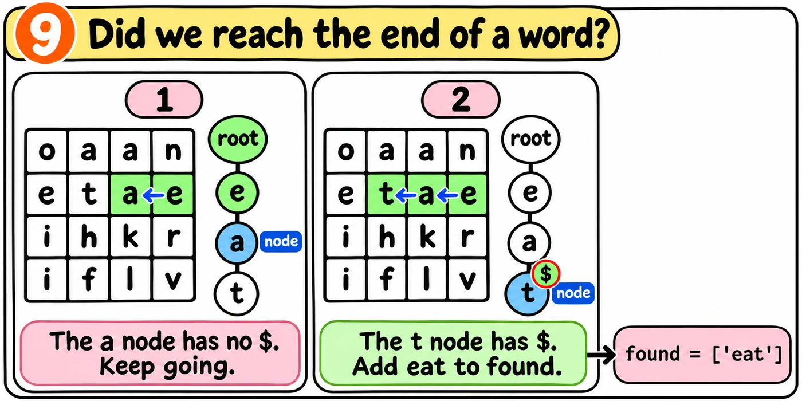
If the new node has '$', add its word to found. Then delete '$' to prevent repeats. Keep searching for longer words.
def dfs(self, board, r, c, node, found): if r < 0 or r >= len(board) or c < 0 or c >= len( return letter = board[r][c] if letter not in node: return node = node[letter] if '$' in node: found.append(board[0]): node['$']) del node['$']
The a node is now node. Does the call add a word to found?
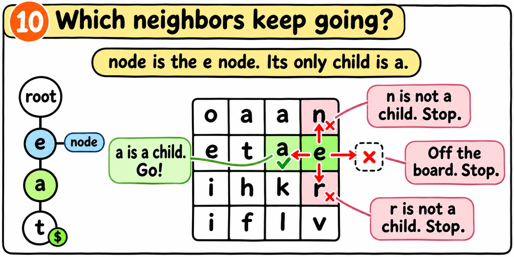
Call dfs on the four nearby cells. Pass the new node.
def dfs(self, board, r, c, node, found): if r < 0 or r >= len(board) or c < 0 or c >= len( return letter = board[r][c] if letter not in node: return node = node[letter] if '$' in node: found.append(board[0]): node['$']) del node['$'] self.dfs(board, r + 1, c, node, found) self.dfs(board, r - 1, c, node, found) self.dfs(board, r, c + 1, node, found) self.dfs(board, r, c - 1, node, found)
The e node is node. Its only child is a. Which call continues?
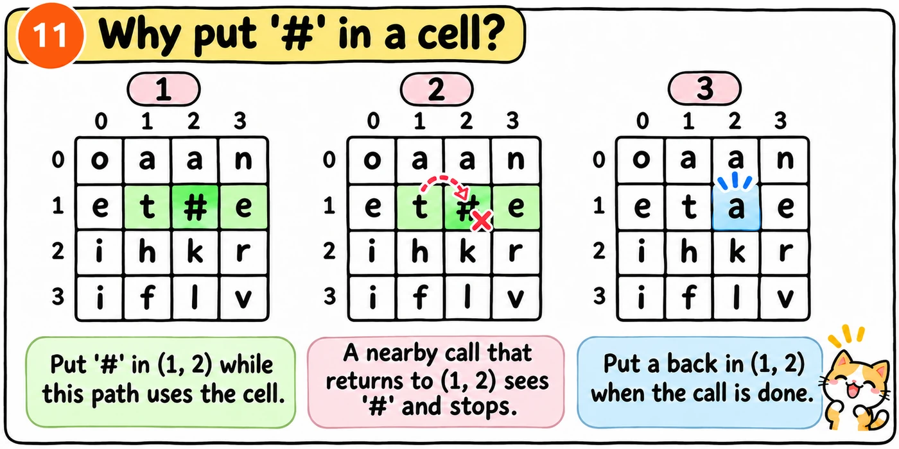
Put '#' in the cell before the calls. Restore the letter after them.
def dfs(self, board, r, c, node, found): if r < 0 or r >= len(board) or c < 0 or c >= len( return letter = board[r][c] if letter not in node: return node = node[letter] if '$' in node: found.append(board[0]): node['$']) del node['$'] board[r][c] = '#' self.dfs(board, r + 1, c, node, found) self.dfs(board, r - 1, c, node, found) self.dfs(board, r, c + 1, node, found) self.dfs(board, r, c - 1, node, found) board[r][c] = letter
Why do we put the letter back at the end?
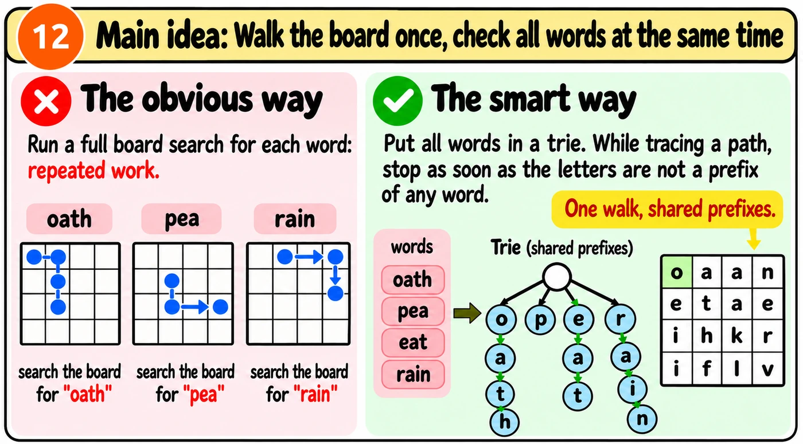
Build the trie like addWord. The '$' key stores each complete word.
root = {}for word in words: node = root for letter in word: if letter not in node: node[letter] = {} node = node[letter] node['$'] = word
The dfs code stays the same. With more words in the trie, one board search can find them all.
Watch the board and the trie move together. Start with The idea, then switch to The code.
def dfs(self, board, r, c, node, found): if r < 0 or r >= len(board) or c < 0 or c >= len( return letter = board[r][c] if letter not in node: return node = node[letter] if '$' in node: found.append(board[0]): node['$']) del node['$'] board[r][c] = '#' self.dfs(board, r + 1, c, node, found) self.dfs(board, r - 1, c, node, found) self.dfs(board, r, c + 1, node, found) self.dfs(board, r, c - 1, node, found) board[r][c] = letter
Write findWords and dfs from memory. The comments tell you each job. Add the code under each comment, then run the tests.
The trie and the loops are already written. Fill in the three parts of dfs. Start each part at the left edge.
findWords codeclass Solution: def findWords(self, board, words): root = {} for word in words: node = root for letter in word: if letter not in node: node[letter] = {} node = node[letter] node['$'] = word found = [] for r in range(len( for c in range(board)): len( self.dfs(board[0])): board, r, c, root, found) return found
def dfs(self, board, r, c, node, found):
Test your understanding.
letter back at the end?found. If '$' stored only True, we would not know which word to add.found only once.Here is a simple way to explain the solution. Tap Build it to write the code one step at a time.